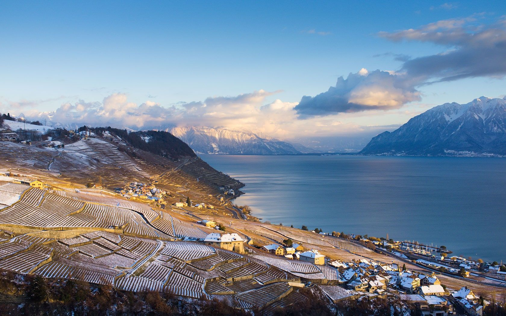

Unofficial concept — exploratory volunteer mockup
Home
Races
Marathon
42,195 km
Half marathon
21,0975 km
10 km
10 km
Walking & Nordic
10 km
Course
Runners
Schedule
Travel
Bib & Expo
FAQ
Info
Entry
Results
Results
Photos
Race hub
Community
Partners
Volunteers
Residents
About
History
Organisation
Press
Contact
EN
FR
DE
EN
IT
Pre-register
Menu
✕
Home
Marathon
Half marathon
10 km
Walking & Nordic
Course
Schedule
Info
Bib & Expo
FAQ
Entry
Results
Photos
Race hub
Partners
Volunteers
Residents
History
Organisation
Press
Contact
Travel
2027 pre-registration
FR
DE
EN
IT

Resident information
Traffic restrictions by sector.
Photo : Lausanne Marathon
Lausanne
Official sector page →
Pully–Paudex–Lutry
Official sector page →
Cully–Rivaz–St-Saphorin
Official sector page →
Riviera
Official sector page →
🏠
Home
🗺️
Course
ℹ️
Info
🎫
Entry
⋯
More